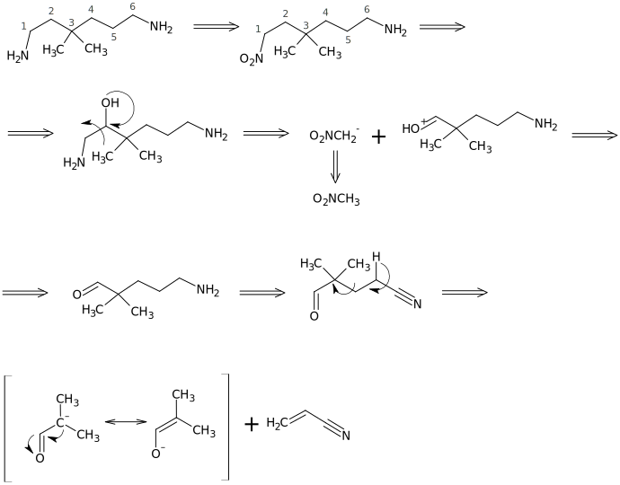

Планирование синтезов
Планирование синтезов Оглавление
Оглавление О проекте
О проектеЛекция 5. Ретрон амины
1. Трансформ гидрирование
1.1. Первичные амины (NH2 у первичного C)
1.1.1.
1.1.2.
1.1.3.
1.1.4.
1.1.5.
1.2. Первичные амины (NH2 у вторичного C)
1.2.1.
1.2.2.
1.2.3.
1.3. Вторичные амины (NH у первичного C)
1.3.1.
1.3.2.
1.4. Вторичные амины (NH у вторичного C)
1.4.1.
1.4.2.
1.4.3.
1.5. Третичные амины (N у первичного C)
1.5.1.
1.5.2.
1.6. Третичные амины (N у вторичного C)
2. Трансформ алкилирование
2.1. Первичные амины (NH2 у первичного C)
2.2. Первичные амины (NH2 у вторичного C)
2.3. Первичные амины (NH2 у третичного C) - трансформ Риттера
3. Трансформ Гофмана
4. Трансформ Курциуса
5. Трансформ Гриньяра
6. Трансформ Брауна
6.1. Первичные амины
6.2. Вторичные амины
7. Реакция Альдера
Задачи по теме
Задача 1
Анализ
Синтез
Задача 2
Анализ
Синтез
Задача 3
Анализ
Синтез
Задача 4
Анализ

Синтез
Задача 5
Анализ
Синтез
Задача 6
Анализ
Синтез
Задача 7
Анализ
Синтез
Задача 8
Анализ
Синтез
Задача 9
Анализ
Синтез
Задача 10
Анализ
Синтез
Задача 11
Анализ
Задача 12
Анализ